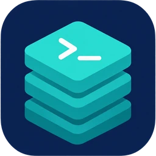

DevStack
A complete local web stack for macOS that works fully offline.

A complete local web stack for macOS that works fully offline.
An OpenVPN client written from scratch in Swift. Pick which apps and websites use the tunnel.
Control your Mac from your iPhone or iPad over the local network.
Self-hosted video on demand with your own branded player.